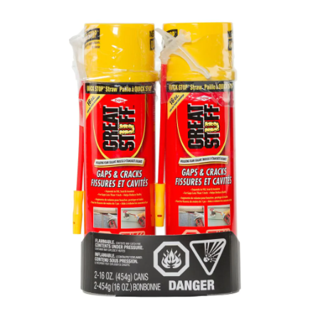

All Products

CUSTOM BUILDING PRODUCT
These stones are susceptible to etching and staining from acids and oils in foods such as coffee, tea, wine, orange juice, mustard and ketchup.
View Details

GAPS AND CRACK INSULATING FOAM
Use GREAT STUFF Gaps & Cracks Insulating Foam Sealant with QUICK STOP Straw Technology to seal around common areas of energy loss such as rim joists, /sill plate, dryer vents,pipe penetrations, attic and more.
View Details